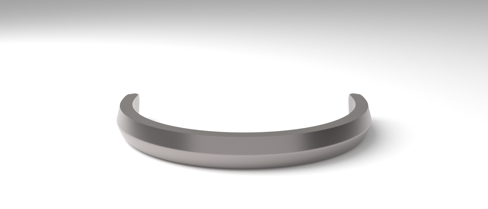

amuSphere
Coming 2038

Enter into Full Dive.
Complete manipulation of the user conciousness via altering brain signals in and out of the console. Five sense precision simulated for the ultimate virtual reality experience.
Performance.
amuSphere elevates the virtual reality experience to a whole new level of performance and portability. Wherever your ideas take you, you’ll get there faster than ever with new generation processors and memory, advanced simulation render cores, instant storage, and more. So when you’re powering through pro‑level processing jobs like compiling code, rendering 3D models, adding special effects, layering multiple tracks, or encoding video, you’ll get everything done. Faster.
3.1THz
render frequency
10 TB
memory
72 hrs
battery life
Quantum Crystal Suspension Matrix.
Timeless. Endless.
Connect with millions of users around the world with no delay in response times. amuSphere uses the quantum properties of the nano crystal matrix to connect millions into a decentralized information matrix. That means real time response for heavy action games, where time is essential down to the attosecond. Capable of time dilation, the Quantum Crystal Suspension Matrix can process time differently for each user, offering games to now truly enter the time and speed genres people truly crave for.
The New Era of Security.
Advanced Biometric Scan.
Authorization access to multiple users. Account details tailored to the user with unique biometric data.
Hazard Prevention.
Provoke a safety logout feature in case user status becomes abnormal.